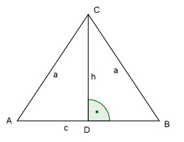

Aufgabe 55 Ein gleichschenkliges Dreieck hat einen Umfang von 16 cm und eine Höhe auf die Grundseite von 4 cm. Wie groß sind die Fläche, die Länge eines Schenkels und die Grundseite?  U = 2 * a + c 16 = 2 * a + c |-c 16 - c = 2 * a |:2 c a = 8 - --- 2 c a2 = h2 + (---)2 2 c c2 (8 - ---)2 = 42 + ---- 2 4 c2 c2 c2 64 - 8c + ---- = 16 + ---- |- ---- 4 4 4 64 - 8c = 16 |+8c 64 = 8c + 16 | -16 48 = 8c | :8 c = 6 cm 6 a = 8 - --- = 5 cm 2 6 cm * 4 cm A = -------------- = 12 cm2 2